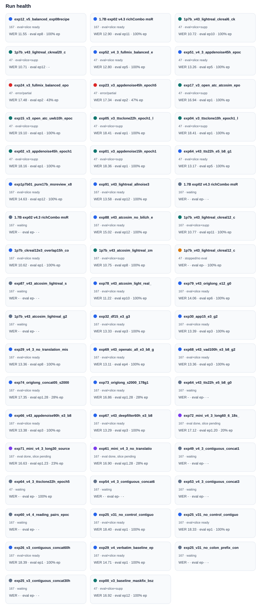
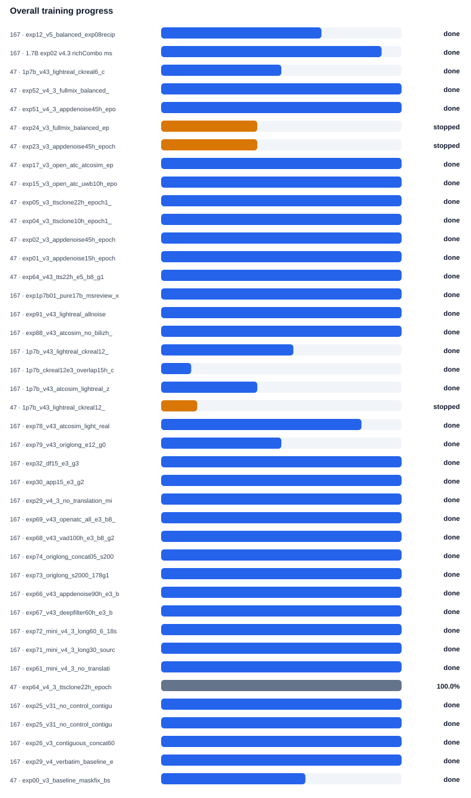
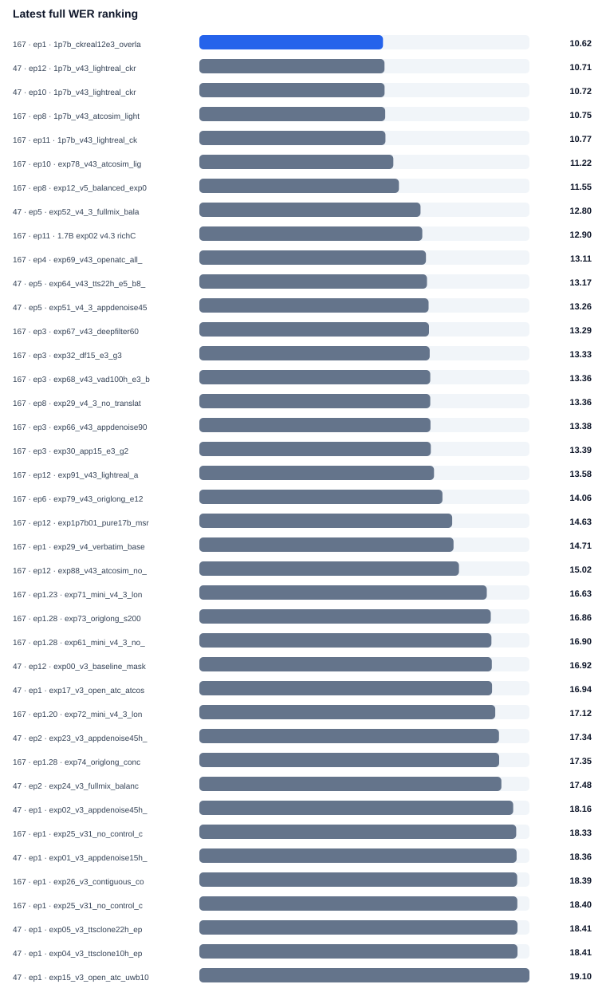
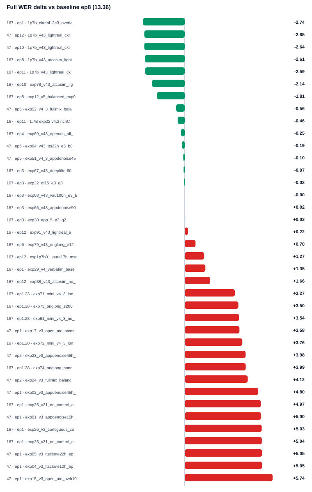

ATC ASR 训练监控面板
47 / 178 / 167 三台机器的 ablation 训练状态、full WER 与 slice 结果统一查看。页面每小时刷新一次，图表默认展示当前扫描到的完整 run 集合。
{kind=link}
{kind=link}
{kind=link}
{kind=link}
{kind=link}
{kind=link}
训练中
- 178 · exp29_v4_1_no_colon_prefix_baseline_epoch3_remote178_mas · 228/28167 steps (1%, ETA 24:52:06)
- 178 · exp60_v4_2_reading_pairs_epoch3_epoch3_remote178_maskfix · 279/28167 steps (1%, ETA 28:31:17)
- 47 · exp23_v3_appdenoise45h_epoch5_epoch5_local47_maskfix_bsz · 21662/54155 steps (40.0%, epoch 2.00)
- 178 · exp22_v3_atcosim_epoch5_epoch5_remote178_maskfix_bsz4_ep · 19276/48190 steps (40.0%, epoch 2.00)
- 47 · exp24_v3_fullmix_balanced_epoch5_epoch5_local47_maskfix_ · 12184/60920 steps (20.0%, epoch 1.00)
Run Health
{kind=link}
{kind=link}

Overall Progress
{kind=link}
{kind=link}

Interactive Full WER
默认显示 best、baseline、训练中、多 epoch 和 Top WER run；可以搜索并勾选任意 run。图内不放长标签，避免遮挡，悬停曲线或点可看完整信息。
Latest Full WER Ranking
{kind=link}
{kind=link}

Full WER Delta vs Baseline
{kind=link}
{kind=link}

Interactive Core Slice
可切换 WER/CER/SER/样本数，支持搜索 run 和 slice；悬停单元格查看完整 run、slice、epoch 和数值。
Interactive Supplement Slice
可切换 WER/CER/SER/样本数，支持搜索 run 和 slice；悬停单元格查看完整 run、slice、epoch 和数值。